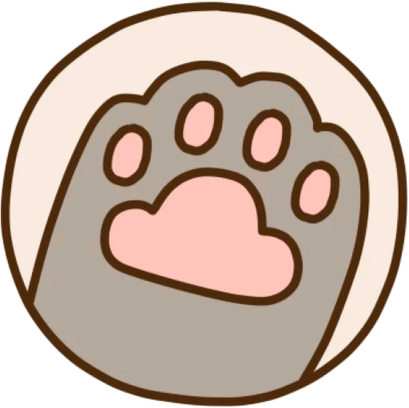
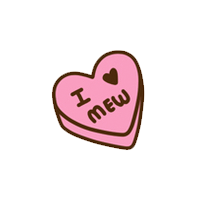
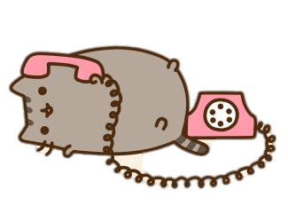
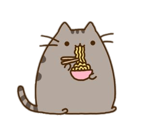
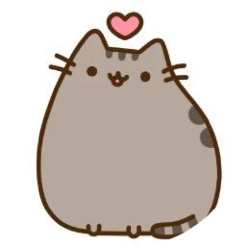
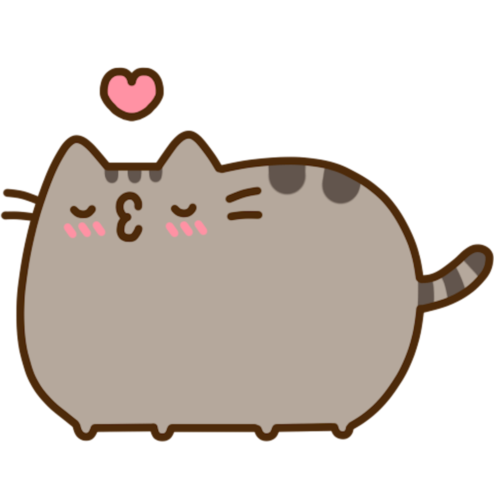
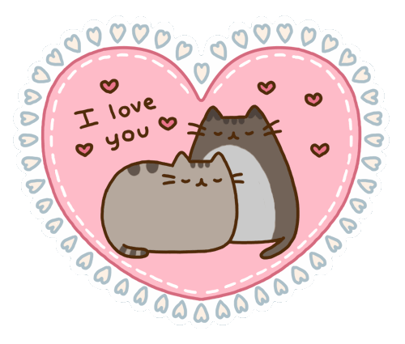
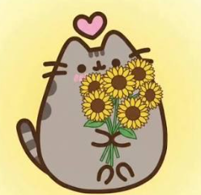
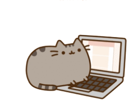

Amor gracias por estar conmigo, la verdad nunca llegué a amar tanto a alguien como para hacer algo de este tipo. Desde que te conocí más a fondo me pareciste un ángel y una niña con la mala suerte de toparse con personas que fingían ser lo que no son, y desde aquel momento supe que te quise cuidar más que a nadie en el mundo. Ahora me aterra que te sientas mal, llores, o te sientas sola, pero mi vida, no lo estás, corazón, me tienes a mí, aunque no de lado a lado, pero pronto lo estaremos, mi vida, te lo prometo. Mi mayor deseo es cuidar a esa niña tan dulce que tienes en lo más profundo de tu corazón, mi amor. Nunca dudes de mi amor hacia ti, siempre te acompañaré en las buenas y mucho, mucho más en las malas, mi vida.

Sé que no te gusta expresar lo que sientes en lo más profundo de tu corazón, pero ahora me tienes a mí, amor. Soy consciente de que te esfuerzas luchando con tus pensamientos, de cuántos daños pasaste y que aún sueles pasar, y me duele en el alma, pero no tienes que hacerlo sola, cariño. Siempre estaré en tu vida para escucharte y amarte.



Puta madre, de verdad me duele no darte las flores en persona, mi vida, y ven mis suegros cuánto te amo y que daría mi vida por ti XD. Y no vi mejor manera de darte algo, que esta, la verdad, si no, hace rato en persona 2 toneladas de flores tendrías XDD. TE AMO MI BEBÉ.